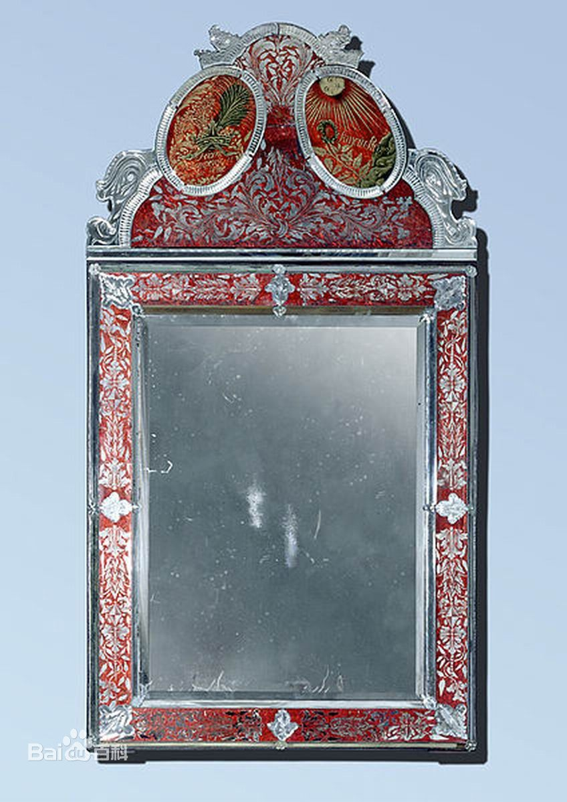
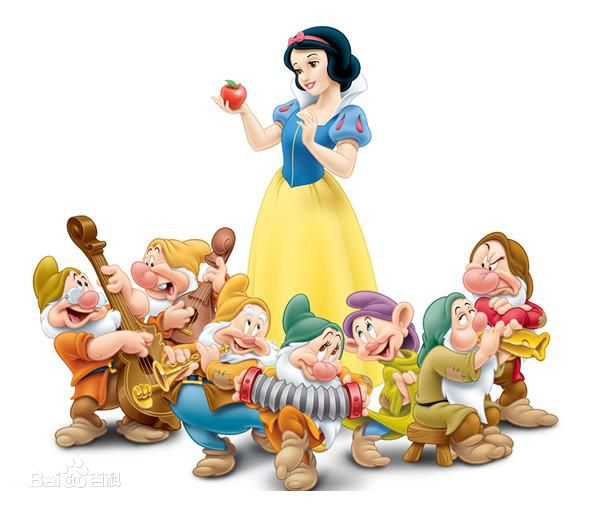

格林兄弟版
在故事开始时，王后坐在在一个敞开的窗户边，冬雪像针一样刺破了她的手指，导致三滴鲜血滴落在雪地和乌木窗框上。她欣赏着三种颜色的混合变化，对自己说:“哦，我多么希望我有一个女儿，皮肤像雪一样白，嘴唇像血一样红，头发黑得像乌木窗框”。不久之后，女王的确生一个女儿像皮肤雪一样白，嘴唇像血一样红，头发黑得像乌木一样。他们便给她取名叫白雪公主，不久之后，女王去世。
经过一年之后，国王娶了一个新妻子，这个妻子非常的美丽，但是她目空一切俄日企鹅非常骄傲。这个新王后拥有一个神奇的魔镜，每天早上她问:“魔镜在我手，谁是这块土地上最美丽的人?”。镜子总是回答说:“我的女王，你是最美丽的在那块土地上。“女王总是感到很高兴，因为魔镜从来没有撒谎。但是，当白雪公主长到七岁，她变得美如天使甚至比女王更美丽。当王后问她的镜子，它回答:“我的女王，你是这里最美丽。但白雪公主比你更美丽一千倍。”

女王很震惊，她的脸因为生气变得又绿又黄，内心充满嫉妒，从那一刻她的心开始反感白雪公主。嫉妒和骄傲，像杂一般在她的内心生长，让她彻夜难眠。女王命令一个猎人把白雪公主带到森林的最深处杀掉。她要求猎人带回白雪公主的心肝，以证明白雪公主死了。
这里有一个链接链接到http://ife.baidu.com猎人将白雪公主到森林里，但当他提高自己的刀后，他发现自己无法下狠心杀死她。白雪公主看见了猎人的举动抽泣得祈求猎人:“哦，亲爱的猎人，请不要杀我!让我自己了解我自己的生命，我将跑进森林，再也不会回来!”。猎人认为他离开白雪公主后，女孩一定会被野生动物吃掉。他就向一个厨师要了野猪的心肝交给了女王。
蜿蜒穿过森林后数日，白雪公主发现一个属于小矮人的小别墅。因为没有人在家，她吃一些饭，喝了点酒，然后拼起了所有的床。最后拼起的床足够让她舒适躺下，，她就在床上睡着了。当小矮人回家时，他们立即就能知道有人偷偷潜入的，因为家里的一切都是一团糟。在他们大声讨论谁偷偷潜入了自己的家，最后发现熟睡的白雪公主。这时女孩醒来了，对他们解释发生了什么事，小矮人怜悯她，说:“如果你保持房子的整洁，做饭，铺床叠被，洗衣服，缝纫，和编织，并使一切干净有序，你就可以和我们住在一起，你会有你想要的一切。但他们警告她独自在家时要小心，不要一个人到山里乱跑，也不要相信陌生人。
与此同时，皇后再次问她的镜子:“魔镜在我手，谁是这块土地上最美丽的?“镜子回答说:“我的女王，你是这里最美丽的。远在七个小矮人家的但白雪公主比你美丽几千倍。”女王惊恐地得知猎人已经背叛了她，白雪还活着。她思考着如何骗过白雪公主，然后，她把自己乔装成一个老小贩。女王走到小矮人的别墅，声称自己能提供色彩鲜艳，柔滑的鞋带，并说服白雪公主选取了最好的一根鞋带作为礼物。然后女王把这根施展了魔法鞋带紧紧绑在了白雪公主的脚上，白雪公主晕倒了过去。但小矮人回来时发现了这一情况，松开了魔法鞋带，让白雪公主重新醒了过来。
第二天早上女王询问她的镜子，镜子再次说明了白雪公主依然活着的消息。王后被激怒了，她打扮成一个卖梳子的商人，声称为白雪公主带一个漂亮梳子作为礼物。在她刷白雪公主的头发时，那一个有毒的魔法梳子让女孩晕倒了，但是小矮人们回来拔掉了梳子让白雪公主再一次醒来。和第二天早上镜子告诉王后，白雪公主仍然是“比他更加美丽的女人。听到这个消息女王的震惊和愤怒几乎让她的心脏停止跳动。作为第三次和也是最后的尝试，她偷偷查阅了最黑暗的魔法，使用一个带毒的苹果并且伪装一个农场主的妻子，带着这个苹果她找到了白雪公主。这次女孩因为之前几次的情况，首先是不愿接受的，所以女王削减一半的苹果，自己吃掉了白色(无害的)部分苹果，并且把给红色(毒)部分给白雪公主。白雪公主刚刚咬了一口就昏倒在地，再也无法醒过来，女王终于赢得了胜利。当小矮人们回到了别墅，发现自己无法救活这个女孩，因为他们无法找到白雪公主昏厥的原因，只能认为她已经死了，小矮人们无法承受失去白雪公主的伤痛，便把她安置在一个水晶棺材中，每天能够看到她。
时间很快过去了，一天一个骑着白马的王子经过了这里，发现了躺在棺材里睡着的白雪公主。他大步跨到她的棺材面前，被她的美丽深深吸引，立刻爱上了她。七个小矮人感动于他的苦苦恳求便同意让他带走装有白雪公主的水晶棺材，王子的仆人们抬棺木离开时，由于动作幅度很大，对引起了强烈的震动。此次震动使那块毒苹果从白雪公主的喉咙抖了出来，最后唤醒了她。王子随后声明他对她的爱，他们很快拟定了一个婚礼计划。这对夫妇邀请了大陆上每一个王后和国王来婚礼，包括白雪公主的继母。与此同时，女王，仍然相信白雪公主不是活着，再问她神奇的镜子，谁是这块土地上最美丽的女人。镜子说:“你，我的女王，是很美丽的。但白马王子那位年轻的女王是比你美丽一千倍。”
这难以置信的消息让女王惊骇万分，女王心中充满了恐惧和怀疑。对于邀请犹豫不决，但她最终决定去。因为不知道这个新皇后确实是她的继女，她到达了婚礼，心里充满了最深的恐惧。当她意识到最后的真相时，已经无法逃走了。作为对她试图谋杀的惩罚，王子把一双鞋子烧红的铁鞋子让女王穿上。她随后被迫进入铁鞋在火上跳舞，跳舞直到她最后死去。
在他们的第一个版本，格林兄弟他们第一次发布版本收集，首恶是白雪公主的嫉妒的母亲。在一个版本发送到另一个民俗学研究者之前的第一版，此外，她不订购一个仆人带她去了森林，但需要她自己去采集花朵和抛弃了她；在第一个版本中，这个任务被转移到一个仆人。相信改变到一个继母在以后的版本中被淡化的儿童故事。
迪斯尼的变异的白雪公主给了小矮人的名字和包括神奇，移动的树木和一个歌唱白雪公主。
许多其他故事的变化存在整个欧洲。在这些变化的小矮人是强盗，而神奇的镜子是一个对话框与太阳或月亮。
在一个版本从阿尔巴尼亚、收集约翰·Georg·冯·哈恩，主要人物的生活与40个龙。她的睡眠是由一个环。故事的开头有一个转折，在这一个老师敦促女主角杀死她邪恶的继母，她将取代她的位置。这个故事的起源是有争议的，它可能没有年龄比中世纪。事实上有可能两个阿尔巴尼亚版的白雪公主:一个继母试图杀死她，另一个在她的两个姐妹试图杀死她的嫉妒。“嫉妒姐妹”是另一个阿尔巴尼亚童话故事。在这两个童话的死亡是由于一个环。
并联的继母的问题她的魔镜，印度史诗Padmavat(1540)包括线:“谁更漂亮，我还是Padmavati吗?女王Nagamati要求她的新鹦鹉，它给出了一个令人不愉快的回复…”;
这个故事在俄罗斯作家亚历山大·普希金的诗死去的公主的故事和七个骑士(1833)类似于白雪公主，骑士取代矮星。
白雪公主
白雪公主
1937年迪士尼首部长篇电影动画《白雪公主与七矮人》
日本作家组合桐生操以原版格林童话作为创意来源所做的创作《令人战栗的格林童话》、《令人战栗的格林童话2》中的白雪公主，其王后是白雪公主的亲生母亲。
由于格林童话中对于白雪公主外貌的描写：不自然的白肤、黑发与红唇，被某些人认为和吸血鬼相似，因此一些作者在他们的再创作中将公主设定为吸血鬼，例如尼尔·盖曼的〈雪、玻璃、苹果〉（"Snow， Glass， Apples"）及香蝶创作的版本（刊登于飞·奇幻世界2005年第11期）
2012年美国黑暗版电影《白雪公主与猎人》
2012年3月的美国电影《白雪公主之魔镜魔镜》
| 人物 | 简介 | 查看 |
|---|---|---|
| 白雪公主 | 玛丽亚·冯·埃特尔 | 点击 |
| 七个小矮人 | 1.doctor （万事通） 2.Bashful （害羞鬼） 3.Sleepy （瞌睡虫） 4.Sneezy （喷嚏精） 5.Happy （开心果） 6.Dopey （迷糊鬼） 7.Grumpy （爱生气） | 点击 |
| 国王 | 菲利普 | 点击 |
| 王子 | Prince | 点击 |
版权所有©
{kind=link}